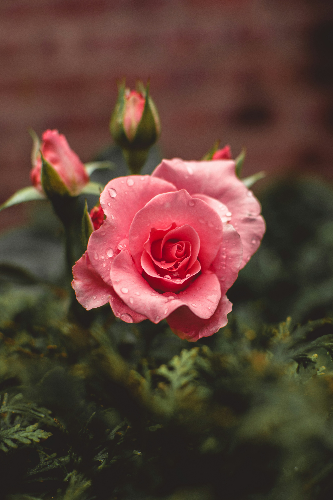
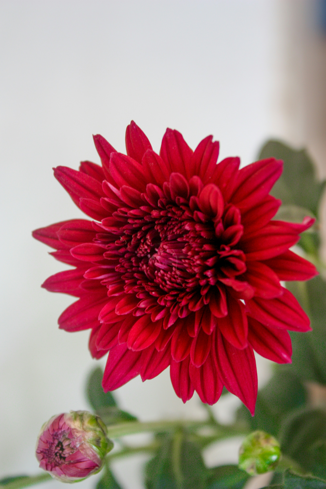

Different Types of Flowers
There are many different flowers that exist. Here are some favourites amongst a group in the COMP-2330 course.
- Roses
- Tulips
- Lilies
- Chrysanthemums



There are many different flowers that exist. Here are some favourites amongst a group in the COMP-2330 course.

